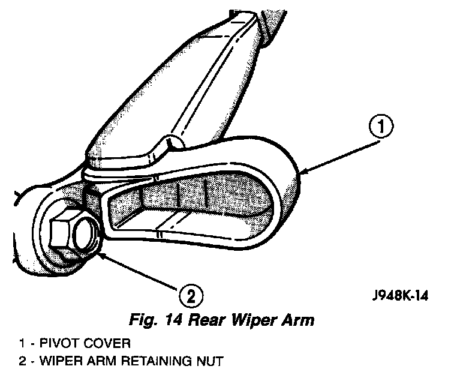
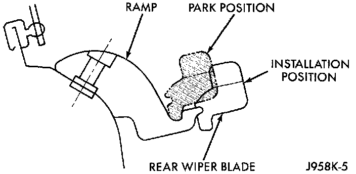

Rear Wiper Arm
Fig.14 Rear Wiper Arm:

1. Remove the wiper arm assembly by lifting the pivot cover and removing the retaining nut.
2. Remove the arm from the motor output shaft using a rocking motion.
Rear Wiper Arm Installation:

3. Install the rear wiper arm with the wiper motor in the Park position. Place the rear wiper blade in the Installation position on the ramp and tighten the retaining nut to 18 N.m (160 in. lbs.).
4. Close the pivot cover and move the rear wiper blade to the Park position on the ramp.